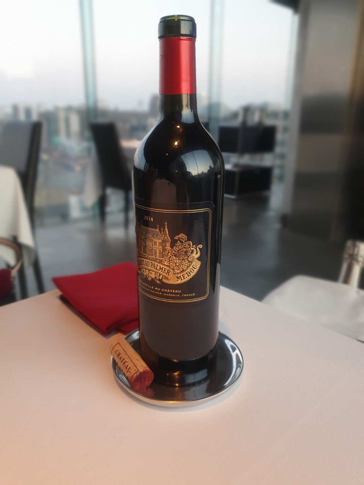

이름: 심기현
성별: 남자
생일: 1989. 4. 17
혈액형: O RH+
사는곳: 서울 양천구 목동
연락처: 010-7337-8738

평소에 많이 먹는 편은 아니지만, 맛집 탐방하는 것을 좋아한다. 또 음식 사진을 남기는 것도 좋아한다.
SNS로 인스타그램을 하기는 하지만 딱히 게시물을 자주 올리는 편은 아니지만, 맛집에 가면 꼭 사진을 남기려고 한다.
나중에 혼자 사진첩에서 음식 사진만 보는 것만으로도 뭔가 스트레스도 해소되고 그날의 좋았던 기억을 떠올릴 수 있기 때문이다.